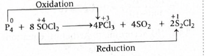

Explanation: The second Balmer line of hydrogen
corresponds to the transition \(n=4 \to 2\). The first Lyman
line of \(He^+\) corresponds to the transition \(n=2 \to 1\).
Using the Rydberg formula for both and comparing them gives
\(\lambda_{He^+} = \dfrac{\lambda}{16}\).
Step-by-step explanation
For hydrogen atom, Balmer series means final orbit is \(n_1
= 2\).
The second line of Balmer series
corresponds to \(n_2 = 4\).
So, \( \dfrac{1}{\lambda} = R_H\left(\dfrac{1}{2^2} -
\dfrac{1}{4^2}\right) \)
This question uses the Rydberg equation for
spectral lines.
For hydrogen: \( \dfrac{1}{\lambda} =
R_H\left(\dfrac{1}{n_1^2} - \dfrac{1}{n_2^2}\right) \)
For hydrogen-like species such as \(He^+\): \(
\dfrac{1}{\lambda} = Z^2R_H\left(\dfrac{1}{n_1^2} -
\dfrac{1}{n_2^2}\right) \)
Balmer series ends at \(n=2\), while Lyman series ends at
\(n=1\).
The important exam point is that \(He^+\) behaves like
hydrogen, but with \(Z^2 = 4\) factor.
Why the correct option is right
Option (a) is correct because direct comparison of the two
wavelength expressions gives \( \lambda_{He^+} =
\dfrac{\lambda}{16} \).
Why the other options are wrong or less suitable
Option (b) is dimensionally wrong as it puts wavelength in
denominator.
Options (c) and (d) come from incorrect simplification of
the Rydberg terms.
The main trap is forgetting the \(Z^2\) factor for \(He^+\).
Exam tip / shortcut / elimination clue
Remember:
Balmer second line \(=\ 4 \to 2\)
Lyman first line \(=\ 2 \to 1\)
Also, for \(He^+\), always multiply by \(Z^2 = 4\).
Since \(He^+\) transition has much larger energy gap, its
wavelength must be much smaller than \(\lambda\), so
\(\dfrac{\lambda}{16}\) is the sensible choice.
Final result
The wavelength of the first Lyman line of \(He^+\) is
\(\dfrac{\lambda}{16}\).
Chapter / topic / subtopic
Chapter: Structure of Atom
Topic: Hydrogen spectrum
Subtopic: Rydberg equation for hydrogen and hydrogen-like
species
Correct answer: (a) II and IV only
Explanation: Statement II is correct because
orbitals with same \(n\) and \(l\) but different \(m\) values
are degenerate in the absence of an external field. Statement IV
is also correct because Lyman series lies in the ultraviolet
region. Statements I and III are incorrect.
Step-by-step explanation
Statement I: incorrect.
Spin quantum number describes the spin orientation of the
electron, not the nucleus.
So this statement is wrong because it mentions spin of the
nucleus.
Statement II: correct.
The two orbitals have: \(n=3,\ l=2\), which means both are
\(3d\) orbitals.
They differ only in magnetic quantum number \(m\), one has
\(+2\) and the other has \(-2\).
In the absence of external field, orbitals with same \(n\)
and \(l\) have the same energy.
So statement II is correct.
Statement III: incorrect.
Energy of photon is: \( E = h\nu = \dfrac{hc}{\lambda} \)
So energy is inversely proportional to
wavelength, not directly proportional.
Also, wave number \( \bar{\nu} = \dfrac{1}{\lambda} \), so
energy is directly proportional to wave number.
Hence statement III is wrong.
Statement IV: correct.
Lyman series involves transitions ending at \(n=1\), which
lie in ultraviolet region.
Concept used / theory behind it
This question mixes three ideas:
quantum numbers,
photon energy relations,
and hydrogen spectral series.
Spin quantum number \((m_s)\) gives the direction of spin of
an electron.
Magnetic quantum number \((m_l)\) distinguishes orientations
of orbitals in space.
Photon energy relation is: \( E = h\nu = \dfrac{hc}{\lambda}
= hc\bar{\nu} \)
Lyman series always lies in ultraviolet region, Balmer in
visible, and Paschen in infrared.
Why the correct option is right
Option (a) is right because only statements II and IV are
correct.
Why the other options are wrong or less suitable
Any option containing statement I is wrong because spin
quantum number does not refer to nucleus.
Any option containing statement III is wrong because photon
energy is inversely proportional to wavelength and directly
proportional to wave number.
Exam tip / shortcut / elimination clue
Two quick memory rules help here:
\(E \propto \dfrac{1}{\lambda}\)
Lyman \(\rightarrow\) ultraviolet
That immediately makes III false and IV true.
Final result
The correct statements are II and IV only.
Chapter / topic / subtopic
Chapter: Structure of Atom
Topic: Quantum numbers and hydrogen spectrum
Subtopic: Spin quantum number, degeneracy, photon energy,
Lyman series
Correct answer: (c) \(Cl > F > S > P\)
Explanation: Negative electron gain enthalpy
generally becomes more negative across a period and less
negative down a group. However, chlorine has more negative
electron gain enthalpy than fluorine because the very small size
of fluorine causes stronger electron-electron repulsion in its
compact \(2p\) shell. Also, sulphur has more negative electron
gain enthalpy than phosphorus. Hence the correct order is \(Cl
> F > S > P\).
Step-by-step explanation
Electron gain enthalpy tells us how much energy is released
when an electron is added to a gaseous atom.
More negative electron gain enthalpy means greater tendency
to accept electron.
Across a period, electron gain enthalpy generally becomes
more negative.
Down a group, it generally becomes less negative.
Now compare the given elements:
Chlorine vs fluorine:
Although fluorine is above chlorine, chlorine has more
negative electron gain enthalpy than fluorine.
This is because fluorine is very small, so the incoming
electron enters a compact \(2p\) orbital where repulsion is
higher.
So: \(Cl > F\)
Sulphur vs phosphorus:
Sulphur has more negative electron gain enthalpy than
phosphorus.
Phosphorus has half-filled \(3p^3\) configuration, which is
relatively stable, so addition of one more electron is less
favoured.
So: \(S > P\)
Combining both comparisons: \(Cl > F > S > P\)
Concept used / theory behind it
Electron gain enthalpy is affected by:
atomic size,
effective nuclear charge,
electronic configuration,
and electron-electron repulsion.
Important exceptions:
\(Cl\) has more negative electron gain enthalpy than
\(F\)
\(S\) has more negative electron gain enthalpy than
\(P\)
Half-filled configurations like \(p^3\) are relatively
stable, so electron addition is less favourable.
Why the correct option is right
Option (c) correctly captures both important exceptions and
the overall trend.
Why the other options are wrong or less suitable
Any option placing \(F\) above \(Cl\) is wrong for this
comparison.
Any option placing \(P\) above \(S\) is also wrong because
\(P\) has a stable half-filled configuration.
Exam tip / shortcut / elimination clue
Memorise these two common exceptions:
\(Cl > F\)
\(S > P\)
Then the correct order falls out immediately: \(Cl > F
> S > P\).
Final result
The correct order is
\(Cl > F > S > P\).
Chapter / topic / subtopic
Chapter: Classification of Elements and Periodicity
Topic: Periodic trends
Subtopic: Electron gain enthalpy and its exceptions
Correct answer: (c) \(BF_3 < NF_3 < NH_3\)
Explanation: \(BF_3\) has zero dipole moment
because of its symmetric trigonal planar structure. Both
\(NF_3\) and \(NH_3\) are trigonal pyramidal, but in \(NF_3\)
the bond dipoles oppose the lone-pair direction, whereas in
\(NH_3\) they support it. Therefore \(NH_3\) has larger dipole
moment than \(NF_3\), and the correct order is \(BF_3 < NF_3
< NH_3\).
Step-by-step explanation
Dipole moment depends on:
bond polarity,
molecular geometry,
and vector addition of bond moments.
\(BF_3\):
\(BF_3\) is trigonal planar and perfectly symmetric.
The three \(B-F\) bond dipoles cancel each other.
So, \(\mu(BF_3)=0\).
\(NF_3\) and \(NH_3\):
Both are trigonal pyramidal and \(sp^3\)-hybridised with one
lone pair on nitrogen.
In \(NH_3\), the bond dipoles and lone-pair effect act
roughly in the same direction, so the net dipole moment is
relatively larger.
In \(NF_3\), the highly electronegative fluorine atoms pull
electron density in such a way that bond dipoles oppose the
lone-pair contribution.
So the net dipole moment of \(NF_3\) becomes smaller than
that of \(NH_3\).
Therefore the order is: \(BF_3 < NF_3 < NH_3\).
Concept used / theory behind it
Dipole moment is a vector quantity.
So shape of molecule matters as much as bond polarity.
Symmetric molecules like \(BF_3\), \(CO_2\), and \(CCl_4\)
can have zero dipole moment even if individual bonds are
polar.
Trigonal pyramidal molecules like \(NH_3\) and \(NF_3\) are
polar, but their actual dipole moments depend on how bond
dipoles combine with lone-pair direction.
Why the correct option is right
Option (c) is correct because:
\(BF_3\) has zero dipole moment
\(NF_3\) has a small but nonzero dipole moment
\(NH_3\) has larger dipole moment than \(NF_3\)
Why the other options are wrong or less suitable
Option (a) is wrong because \(H_2O\) has larger dipole
moment than \(H_2S\).
Option (b) is wrong because dipole moment does not increase
simply as \(HF < HCl < HBr\).
Option (d) is wrong because \(CCl_4\) is symmetrical and has
zero dipole moment, so it cannot be placed above \(CHCl_3\).
Exam tip / shortcut / elimination clue
Always first identify which molecules are symmetric.
If a molecule is perfectly symmetric like \(BF_3\) or
\(CCl_4\), its dipole moment is zero.
That alone helps eliminate most wrong options quickly.
Final result
The correct order of dipole moments is
\(BF_3 < NF_3 < NH_3\).
Chapter / topic / subtopic
Chapter: Chemical Bonding and Molecular Structure
Topic: Dipole moment
Subtopic: Effect of shape and bond dipoles on molecular
polarity
Explanation: First convert the given variable
\(x\) into the actual bond order of \(O_2^+\), then compare the
bond orders of \(O_2^-\) and \(O_2^{2+}\) with it.
Step-by-step explanation
Bond order is given by \( \text{B.O.}=\frac{1}{2}(N_b-N_a)
\), where \(N_b\) is the number of bonding electrons and
\(N_a\) is the number of antibonding electrons.
For \(O_2^+\), one electron is removed from the highest
occupied antibonding molecular orbital of \(O_2\).
So \(O_2^+\) has bond order
\(=\frac{1}{2}(10-5)=\frac{5}{2}\).
But the question says bond order of \(O_2^+\) is \(x\).
Therefore, \(x=\frac{5}{2}\).
Now for \(O_2^-\), one extra electron enters an antibonding
orbital. So bond order becomes
\(=\frac{1}{2}(10-7)=\frac{3}{2}\).
Expressing in terms of \(x\): \(
\frac{3}{2}=\frac{3}{5}\times \frac{5}{2}=\frac{3}{5}x \).
For \(O_2^{2+}\), two electrons are removed from antibonding
orbitals. So bond order becomes \(=\frac{1}{2}(10-4)=3\).
Expressing in terms of \(x\): \( 3=\frac{6}{5}\times
\frac{5}{2}=\frac{6}{5}x \).
Concept used / theory behind it
According to molecular orbital theory, electrons in bonding
orbitals increase bond order, while electrons in antibonding
orbitals decrease it.
Oxygen and its ions are classic MO theory questions in
entrance exams.
Removing an electron from an antibonding orbital increases
bond order.
Adding an electron to an antibonding orbital decreases bond
order.
Why the correct option is right
Since \(x=\frac{5}{2}\), the bond order of \(O_2^-\) becomes
\(\frac{3}{2}=\frac{3}{5}x\).
The bond order of \(O_2^{2+}\) becomes \(3=\frac{6}{5}x\).
So the required pair is \(\frac{3}{5}x,\ \frac{6}{5}x\).
Why other options are wrong
The other options do not match the actual bond orders
obtained from MO theory.
This is a common trap if the student forgets that electrons
are added to or removed from antibonding \(\pi^*\) orbitals
in oxygen species.
Exam tip / shortcut / elimination clue
Memorize this pattern for oxygen species: \(O_2^{2+} >
O_2^+ > O_2 > O_2^- > O_2^{2-}\) in bond order.
Numerically, bond orders are \(3,\ \frac{5}{2},\ 2,\
\frac{3}{2},\ 1\) respectively.
If a variable like \(x\) is given, first find its actual
value, then convert the others into multiples of \(x\).
Final result
\( \text{B.O. of } O_2^-=\frac{3}{5}x \)
\( \text{B.O. of } O_2^{2+}=\frac{6}{5}x \)
Hence, option (b) is correct.
Chapter / topic / subtopic
Chapter: Chemical Bonding and Molecular Structure
Topic: Molecular Orbital Theory
Subtopic: Bond order of homonuclear diatomic molecules and
ions
Correct answer: (a) \(H_2,\ 5\)
Explanation: Since equal volumes are diffusing,
use Graham’s law in the form “rate is inversely proportional to
square root of molar mass,” and convert rate into volume divided
by time.
Step-by-step explanation
According to Graham’s law, \(
\frac{r_O}{r_X}=\sqrt{\frac{M_X}{M_O}} \).
Here \(r_O\) and \(r_X\) are the rates of diffusion of
oxygen and gas \(X\), and \(M_O,\ M_X\) are their molar
masses.
Rate of diffusion \(=\frac{\text{volume
diffused}}{\text{time taken}}\).
Given that the same volume diffuses in both cases, let that
volume be \(V\).
Then \( r_O=\frac{V}{20} \) and \( r_X=\frac{V}{Y} \).
So, \( \frac{V/20}{V/Y}=\sqrt{\frac{M_X}{32}} \).
After canceling \(V\), we get \(
\frac{Y}{20}=\sqrt{\frac{M_X}{32}} \).
Now test the options.
For \(X=H_2\), \(M_X=2\). Then \(
\sqrt{\frac{2}{32}}=\sqrt{\frac{1}{16}}=\frac{1}{4} \).
So \( \frac{Y}{20}=\frac{1}{4} \Rightarrow Y=5 \).
This matches option (a).
Concept used / theory behind it
Graham’s law states that lighter gases diffuse faster and
heavier gases diffuse slower.
Mathematically, \( r \propto \frac{1}{\sqrt{M}} \).
This means if molar mass becomes very small, diffusion
becomes much faster, so the same gas volume will take less
time.
Since hydrogen is the lightest gas among the options, it is
expected to diffuse the fastest.
Why the correct option is right
For \(H_2\), the calculated time comes out exactly \(5\)
seconds.
This agrees with the option pair \(H_2,\ 5\).
Why other options are wrong
\(He\) has molar mass \(4\), which would not give \(Y=10\)
here.
\(CO\) has molar mass \(28\), very close to oxygen’s \(32\),
so its time should be close to \(20\) seconds, not \(30\).
\(CO_2\) has molar mass \(44\), so it would diffuse slower
than oxygen, but the pair \(40\) does not satisfy the
equation.
Exam tip / shortcut / elimination clue
For equal volumes, you can directly use \(
\frac{t_X}{t_O}=\sqrt{\frac{M_X}{M_O}} \).
So here, \( \frac{Y}{20}=\sqrt{\frac{M_X}{32}} \).
This avoids separately writing rates and makes the question
very quick.
Also, the lightest gas should have the smallest time. That
already points strongly toward hydrogen.
Explanation: A disproportionation reaction
requires the same element in the same reactant species to
undergo both oxidation and reduction simultaneously. In option
(d), redox does occur, but the same element is not both oxidized
and reduced, so it is not disproportionation.
Oxidation and reduction pattern

Step-by-step explanation
Let us examine the oxidation states in option (d).
In \(P_4\), phosphorus is in elemental form, so oxidation
state of \(P\) is \(0\).
In \(PCl_3\), phosphorus has oxidation state \(+3\).
So phosphorus goes from \(0\) to \(+3\), which means
phosphorus is oxidized.
Now consider sulfur in \(SOCl_2\). The oxidation state of
sulfur is \(+4\).
In \(SO_2\), sulfur remains \(+4\).
But in \(S_2Cl_2\), each sulfur has oxidation state \(+1\).
So sulfur is reduced from \(+4\) to \(+1\).
Therefore oxidation and reduction are both happening, so
this is definitely a redox reaction.
However, phosphorus is only oxidized, and sulfur is reduced.
The same element is not doing both jobs.
Hence this is not a disproportionation
reaction.
Concept used / theory behind it
A redox reaction is any reaction in which oxidation and
reduction happen together.
A disproportionation reaction is a special kind of redox
reaction in which the same element in one
species gets oxidized and reduced at the same time.
So every disproportionation is a redox reaction, but every
redox reaction is not disproportionation.
The key test is:
Is the same element splitting into two different
oxidation states?
Why the correct option is right
In option (d), phosphorus goes only upward in oxidation
state: \(0 \to +3\).
Sulfur goes downward in oxidation state: \(+4 \to +1\).
So it is a normal redox reaction involving two different
elements.
That is why it is only redox, not disproportionation.
Why other options are wrong
(a) In \(H_3PO_3\), phosphorus is in \(+3\)
state. It forms \(H_3PO_4\) where \(P=+5\) and \(PH_3\)
where \(P=-3\). Same phosphorus is both oxidized and
reduced, so this is disproportionation.
(b) In \(H_2O_2\), oxygen is in \(-1\)
state. It forms \(H_2O\) where oxygen is \(-2\) and \(O_2\)
where oxygen is \(0\). Same oxygen is both oxidized and
reduced, so this is disproportionation.
(c) In \(P_4\), phosphorus starts at \(0\).
It forms \(NaH_2PO_2\) where \(P=+1\) and \(PH_3\) where
\(P=-3\). Same phosphorus is both oxidized and reduced, so
this is also disproportionation.
Exam tip / shortcut / elimination clue
Whenever you see the word
disproportionation, immediately check
whether one element from a single reactant ends up in two
different oxidation states.
If oxidation and reduction involve different elements, it is
ordinary redox, not disproportionation.
Options containing \(H_2O_2\), \(H_3PO_3\), \(P_4\) with
alkali are often standard disproportionation patterns.
Final result
Option (d) is a redox reaction.
But it is not a disproportionation reaction because the same
element is not simultaneously oxidized and reduced.
Hence, option (d) is correct.
Chapter / topic / subtopic
Chapter: Redox Reactions
Topic: Oxidation number and redox processes
Subtopic: Disproportionation reactions
Correct answer: (b) \(+98\ kJ\)
Explanation: Use the standard relation \(
\Delta H_{\text{reaction}}=\sum \Delta
H_f^\circ(\text{products})-\sum \Delta
H_f^\circ(\text{reactants}) \). Since \(O_2(g)\) is in its
standard state, its enthalpy of formation is \(0\).
Step-by-step explanation
The reaction is \( N_2O(g)+\frac{1}{2}O_2(g)\longrightarrow
2NO(g) \).
Given:
\( \Delta H_f^\circ(N_2O)=82\ kJ\ mol^{-1} \)
\( \Delta H_f^\circ(NO)=90\ kJ\ mol^{-1} \)
\( \Delta H_f^\circ(O_2)=0 \) because oxygen gas is in
its standard elemental form.
Now apply the formula: \( \Delta H_{\text{reaction}}=\sum
\Delta H_f^\circ(\text{products})-\sum \Delta
H_f^\circ(\text{reactants}) \).
For products: \( 2NO \Rightarrow 2\times 90=180\ kJ \).
For reactants: \( N_2O+\frac{1}{2}O_2 \Rightarrow 82+0=82\
kJ \).